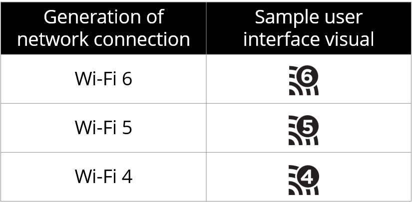

wifi 6

Este año 2020, tras la aprobación oficial el año pasado por parte de la Wi-Fi Alliance, está previsto que el nuevo Wifi 6 acabe por despegar en el hogar. Además de por el cambio en la manera de referimos a los dispositivos y redes compatibles con este nuevo estándar, Wifi 6 trae muchas e interesantes novedades en situaciones cada vez más habituales donde tenemos muchos dispositivos que quieren acceder a Internet al mismo tiempo.
¿Por qué Wifi 6 y no WiFi 802.11ax?
Aunque pasará un tiempo hasta que nos acostumbremos, la Wi-Fi Alliance introdujo en 2019 una nueva denominación para los dispositivos y redes compatibles con cada estándar. El objetivo es claro: facilitar la identificación y diferenciación entre redes WiFi de manera directa y única en el mercado de consumo.

Generational Wi Fi
Nuevos logos que identificarán a partir de ahora a los estándares WiFi
De esta manera, los productos y redes que son capaces de funcionar bajo el estándar 802.11ax lo harán en realidad bajo WiFi 6. Los estándares anteriores, como el actual 802.11ac, recogen otras denominaciones, en este último caso Wifi 5. Así ocurrirá a partir de ahora con los estándares de la Wi-Fi Alliance, aunque solo recibirán denominaciones sencillas tipo Wifi 6 los estándares destinados al mercado de consumo.
El nuevo estándar WiFi 6 es compatible con protocolos anteriores, por lo que si compras uno de los nuevos routers WiFi 6 o 802.11 ax, tus equipos actuales se podrán conectar a él. Sin embargo, para poder obtener las ventajas y avances del nuevo WiFi 6 necesitamos que tanto el emisor como el receptor sean compatibles con WiFi 6.